先善其事必先利其器，使用一款好的编译器对于我们工作学习来说是至关重要的。不论你使用的是 Windows 、Mac OS 还是 Linux，我们都推荐使用 VS code(Visual Studio code) 编辑器。它是微软开发的一款开源跨平台编辑器，几乎在任何系统(甚至网页上)编辑任何语言的代码。得益于其活跃的社区，VS code 拥有非常丰富的插件，这些插件也使得我们编码体验变得更加友好。
安装
进入官网下载
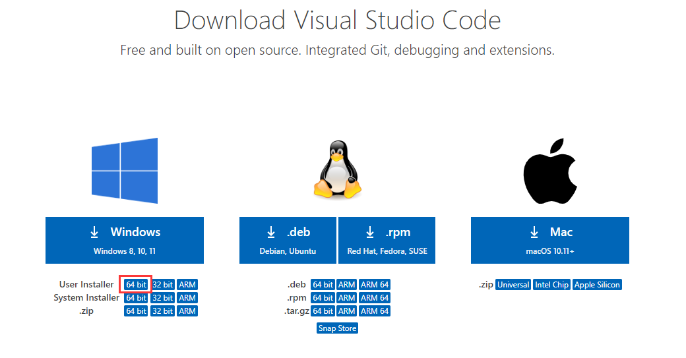
点击下载 User 的 64 bit 版本。
后序安装中，下图中的两个选项都勾选上，这样后面可以直接通过文件夹打开 vs code：
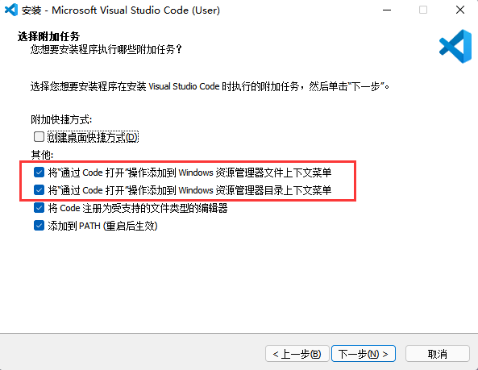
配置 C++ 调试运行
安装 C++ 运行环境
C++ 有很多编辑器，Clang、GNU C++、MSVC等等。我们这里安装 GNU C++，在 Windows 中，直接安装 MinGW（Minimalist GNU on Windows）即可。如果你是 MacOS 用户，可以通过安装 Command Line Toools 来进行配置。
MinGW 推荐到 SourceForge 进行下载, 选择 8.1.0 版本的 x86_64-posix-seh 资源包文件（64位操作系统，启用 C++ 11 多线程特性等）。另外，如果想要使用最新版 GCC-11.2（支持 C++ 20，但对某些机型可能不适配，谨慎使用），可以到这里下载。
下载完成之后，直接拷贝到 G 盘（或其他盘，根据自己情况来调整）根目录下，然后将下图中的路径（g++.exe所在目录路径）复制到剪贴板：
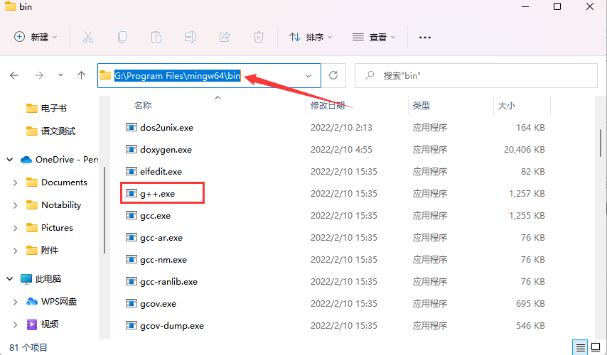
注意，图中的 MinGW 安装在 G 盘，你需要找到你的 MinGW 路径，打开其中的 bin 文件夹，复制其路径即可。 然后，将复制的路径追加到 path 环境变量中，示意图如下：
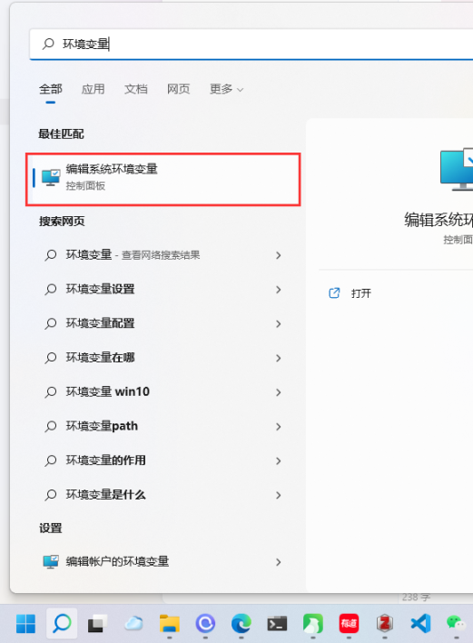
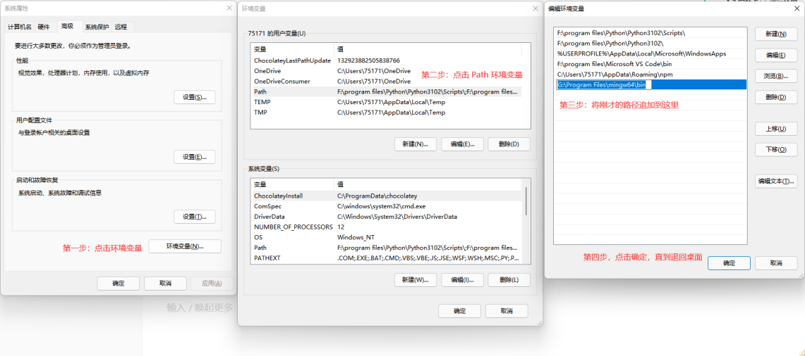
- 如果你在上面的过程中遇到了问题，可以参考该链接中提供的方法：https://new.qq.com/omn/20211202/20211202A08CCW00.html
- 如果你是 win7 用户，同样可以通过百度来找到对应的修改办法，但要特别注意追加环境变量时的逗号分隔符是英文。
配置环境变量是为了在其他地方都可以用到 bin 目录下的 exe 文件（例如 g++.exe）。
你可通过以下方式检验是否安装成功：
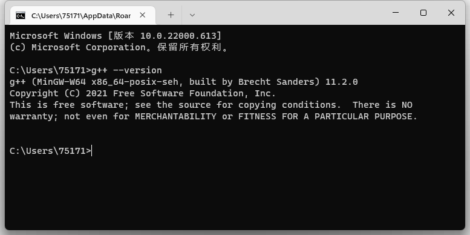
如果你测试的结果与上面的不同，说明环境变量配置失败了，需要重新检查一下前面的步骤，如果实在不行，不妨重启一下电脑试试。
配置 VS Code 运行环境
到了最复杂的一步，由于 VS Code 有着庞大的社区，各种各样的插件、配置会让你感觉到眼花缭乱。这里首先教大家如何在 VS Code 中通过命令行终端（Terminal）中编译运行 C++ 代码，然后再配置如何实现单步调试功能。
安装插件
在这一步，你需要用各种插件来丰富你的 VS Code。打开 VS Code，在左侧工具栏中寻找下图样式的按钮（不要在意按钮的顺序，因为图中已经安装了很多别的插件） 然后在搜索框中输入对应的插件名，点击下载按钮即可。
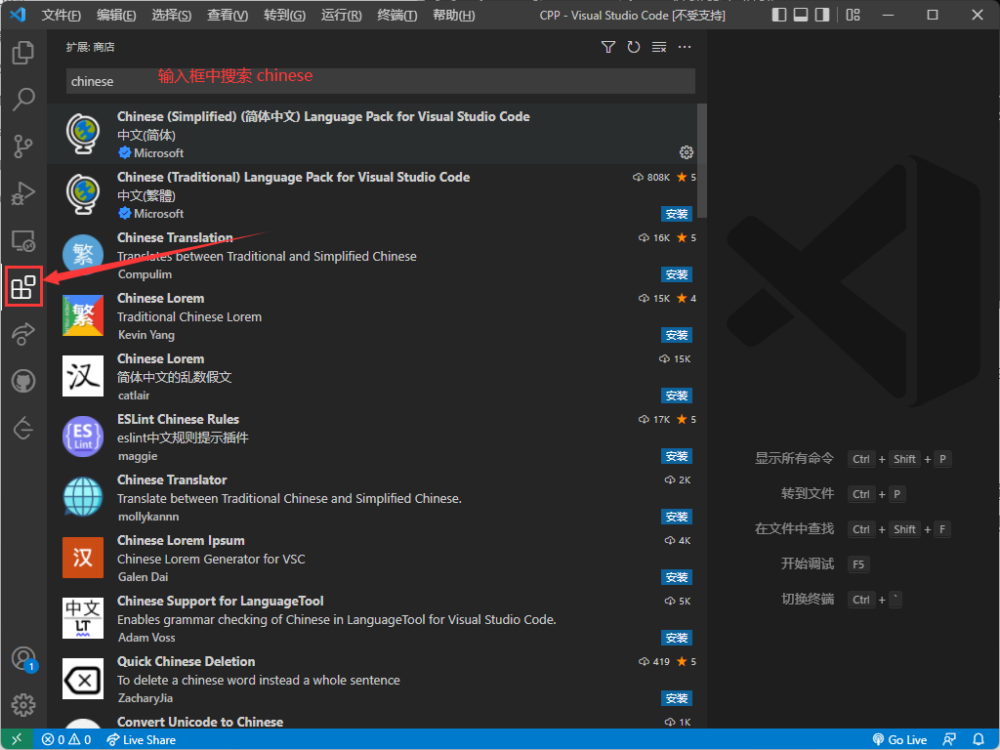
汉化插件 Chinese 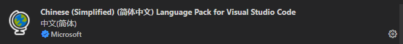
C/C++ 插件 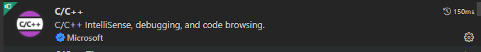
Code Runner 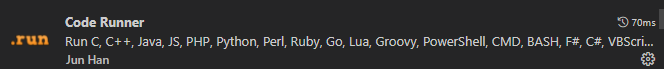 安装完 Code Runner 之后，我们点击右下角的设置按钮，进入「扩展设置」（或者通过右上角的「文件」-「首选项」-「设置」-「搜索框中输入 Code Runner 进行查找」）。找到下图中的三项设置，勾上对钩。 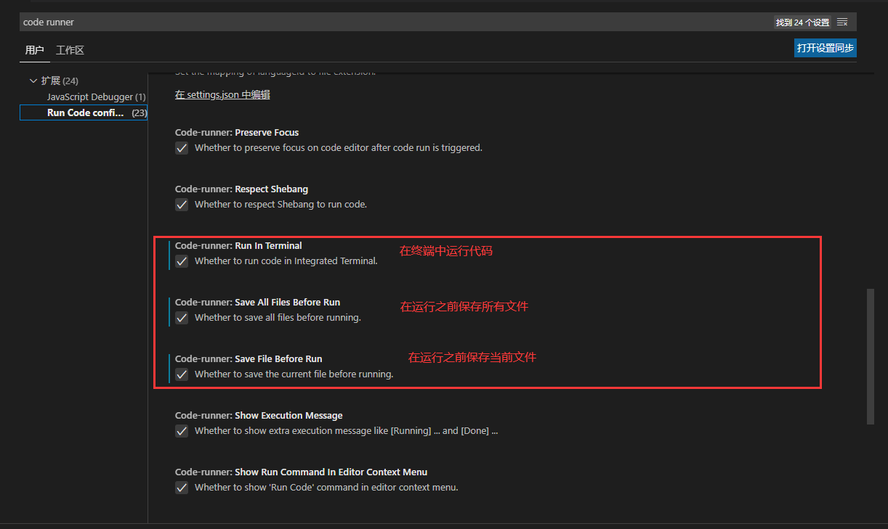 然后找到下图中的设置项，点进去 settings.json，设置我们运行 C++ 时的编译命令 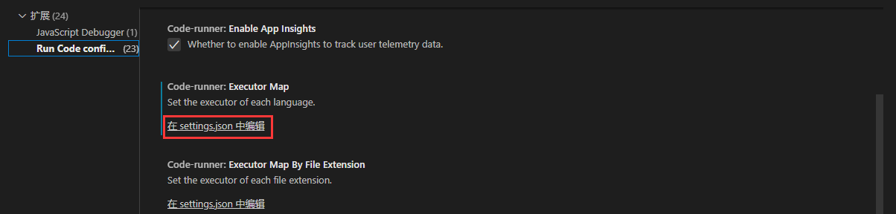 点击去之后，添加如下设置代码：
如果你发现点进去之后 VS Code 中已经生成了很多配置文档，不用担心，你只要确保其中有 C 和 C++ 的编译命令即可。1
2
3
4
5
6{
"code-runner.executorMap": {
"c": "cd $dir && gcc $fileName -o $fileNameWithoutExt && $dir$fileNameWithoutExt",
"cpp": "cd $dir && g++ $fileName -o $fileNameWithoutExt && $dir$fileNameWithoutExt",
},
}这里简单解释一下
cd $dir && g++ $fileName -o $fileNameWithoutExt && $dir$fileNameWithoutExt：$dir表示当前文件的所在目录，cd会将终端的工作目录切换到$dir下，然后对当前文件$fileName使用g++进行编译，编译生成的文件名是$fileNameWithoutExt，然后紧接着直接通过命令$dir$fileNameWithoutExt运行编译好的文件。如果你不能完全理解我在说什么也没有关系，只要确保有这一条配置就可以了。
测试运行
接下来我们测试运行 C++ 代码，首先我们需要在电脑中找一个地方创建一个空的文件夹用来存放代码（最好是空的），点击左上角的「文件」，然后点击「打开文件夹」，选择刚刚创建的文件夹。 例如，我这里创建了一个名字为 CPP 的文件夹，点击按钮创建新的文件 a.cpp。
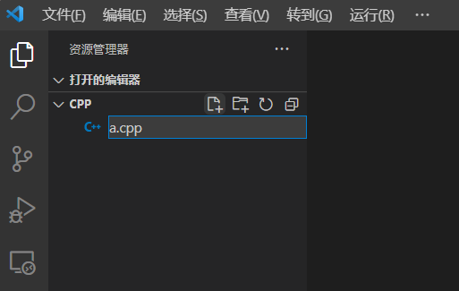
输入以下代码：
1 |
|
点击 Run Code 运行（或者 Ctrl + Alt + N），可以看到下面的终端输出了
Hello World!11 ，运行成功！
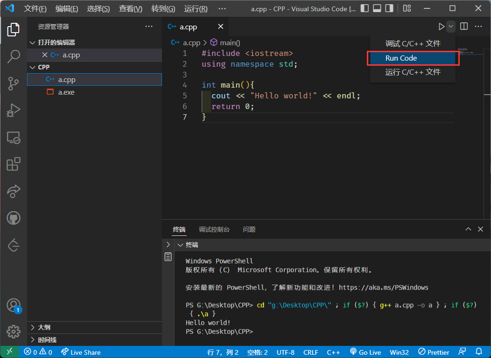
到此为止，你可以通过 VS Code 来写单文件的 CPP 代码了。（如果要是多文件的 CPP 项目，建议使用 MakeFile 来编译）
调试运行
如果你不满足于终端运行，想要单步调试代码，该如何处理？ 也很简单，首先，你在 CPP 文件夹中创建一个名字为 .vscode 的文件，注意前面的点不可以被忽略，它将被 VS Code 视作配置文件。然后在里面创建两个文件：
launch.json 注意下面的第 15 行配置，它对应的是你 MinGW 的安装环境，需要找到 bin 目录下的 gdb.exe 文件。注意所有的文件分隔符都是用
/而不是\，如果使用\还需要将其转义为\\。1
2
3
4
5
6
7
8
9
10
11
12
13
14
15
16
17
18
19
20
21
22
23
24
25
26{
"version": "0.2.0",
"configurations": [
{
"name": "(gdb) Launch",
"type": "cppdbg",
"request": "launch",
"program": "${fileDirname}/${fileBasenameNoExtension}.exe", // 调试目标文件
"args": [], // 指定调试传入参数，可自行修改
"stopAtEntry": false,
"cwd": "${cwd}",
"environment": [],
"externalConsole": true,
"MIMode": "gdb",
"miDebuggerPath": "G:/Program Files/mingw64/bin/gdb.exe", // /path/to/gdb
"setupCommands": [
{
"description": "Enable pretty-printing for gdb",
"text": "-enable-pretty-printing",
"ignoreFailures": true
}
],
"preLaunchTask": "build-g++" // 每次调试前 - 都进行生成任务执行编译，保证调试的目标文件是最新的
}
]
}注意到启动调试 （launch）之前，我们配置了 build-g++，所以还需要一个 tasks.json文件。
tasks.json 以下内容不需要修改，直接复制粘贴即可。
1
2
3
4
5
6
7
8
9
10
11
12
13
14
15
16
17
18
19
20
21
22
23
24
25
26
27
28
29
30
31
32
33
34
35
36
37
38
39
40{
// See https://go.microsoft.com/fwlink/?LinkId=733558
// for the documentation about the tasks.json format
"version": "2.0.0",
"tasks": [
{
"label": "build-g++", // 给当前的生成任务一个名字
"type": "shell",
"command": "g++",
"args": [ // 如果你以后对于编译参数有任何修改，就在这里修改。
"-g",
"${fileDirname}/${fileBasename}", // ${fileBasenmae} VS Code 内置变量: 当前活动文件的完整文件名 - helloworld.cpp
"-o",
"${fileDirname}/${fileBasenameNoExtension}.exe", // ${fileBasenameNoExtension} 这个是 VS Code 内置变量: 当前活动文件的完整文件名舍去扩展名 - helloworld
"-Wall" // 开启全部警告
],
// 错误消息获得 - 正则表达式
"problemMatcher": {
"owner": "cpp",
"fileLocation": [
"relative",
// "${workspaceRoot}"
"\\"
],
"pattern": {
"regexp": "^(.*):(\\d+):(\\d+):\\s+(error):\\s+(.*)$",
"file": 1,
"line": 2,
"column": 3,
"severity": 4,
"message": 5
}
},
"group": {
"kind": "build", // 指定当前任务类型
"isDefault": true // 设置为默认任务
}
}
]
}
配置完成后，你的文件结构应该是这样的（注意 a.cpp 在 CPP 中，而不是在 .vscode 中）：
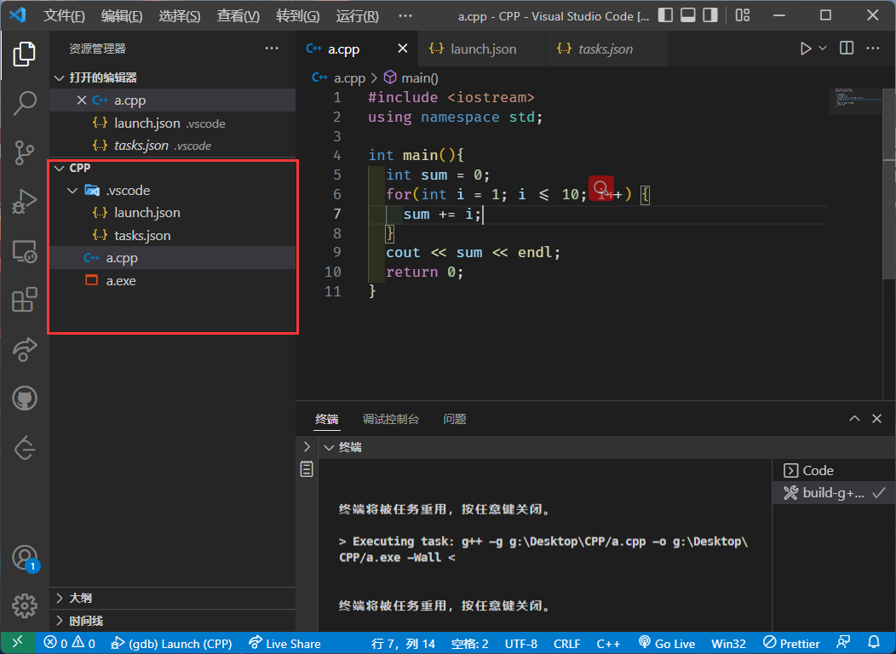
为了测试方便， 我们写了下面这份代码演示调试流程，代码含义是计算 1~ 10 的和：
1 |
|
想要在调试过程中在某条语句处停下，你需要在对应的行前面打上断点，不打断点的话，调试和直接运行并没有明显差异：
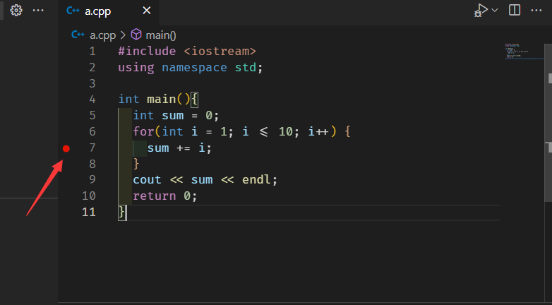
然后按 F5，或者点击右上角的三角形选择调试，进入调试。
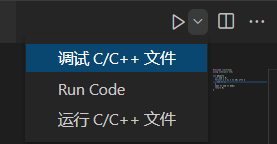
调试过程中，你可以按 F10 来逐步执行代码，并监控每个变量的值。
如下图所示，我们运行到了 i = 6 这一步，第 7 行代码高亮，这表示
sum += i 还没有执行，这时 sum 只累加了 1 ~ 5，所以
sum = 15。

到此为止，你可以畅快的使用 VS Code 来编写 C++ 代码了！
其他
插件
Material Icon Theme
该插件可以美化图标，让你的代码项目结构更加清晰。
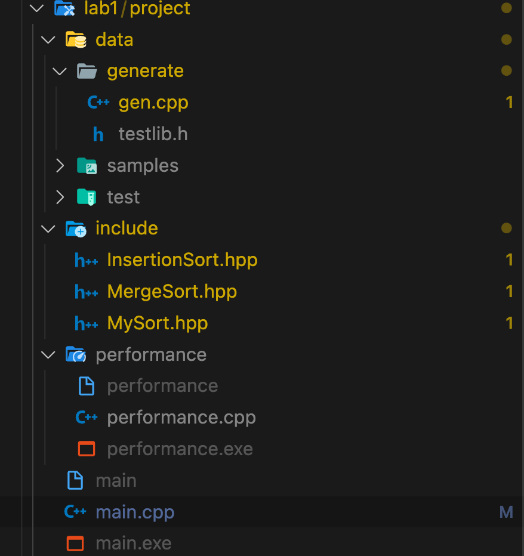
Community Material Theme
主题美化插件
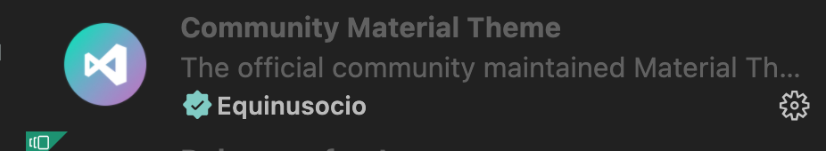
indent-rainbow
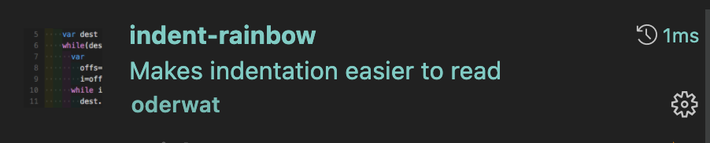
缩进高亮显示，代码结构更加清晰
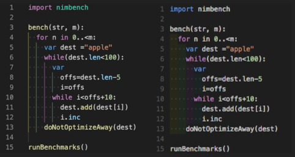
Bracket Pair Colorizer 2
彩虹括号
详细配置教程：https://blog.csdn.net/hazelnut_x/article/details/108910971
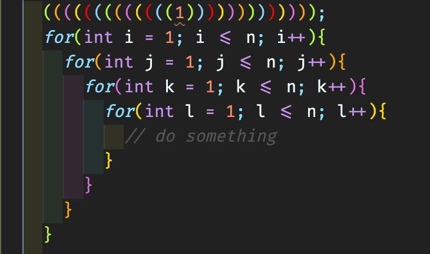
Python
VS Code 也可以用来编写 Python，它的配置方法可以参考这里：Python in VS Code
除了编写基本的python，你也可以通过安装 jupyter 插件来方便的编写 ipynb 文件。Python + Jupyter